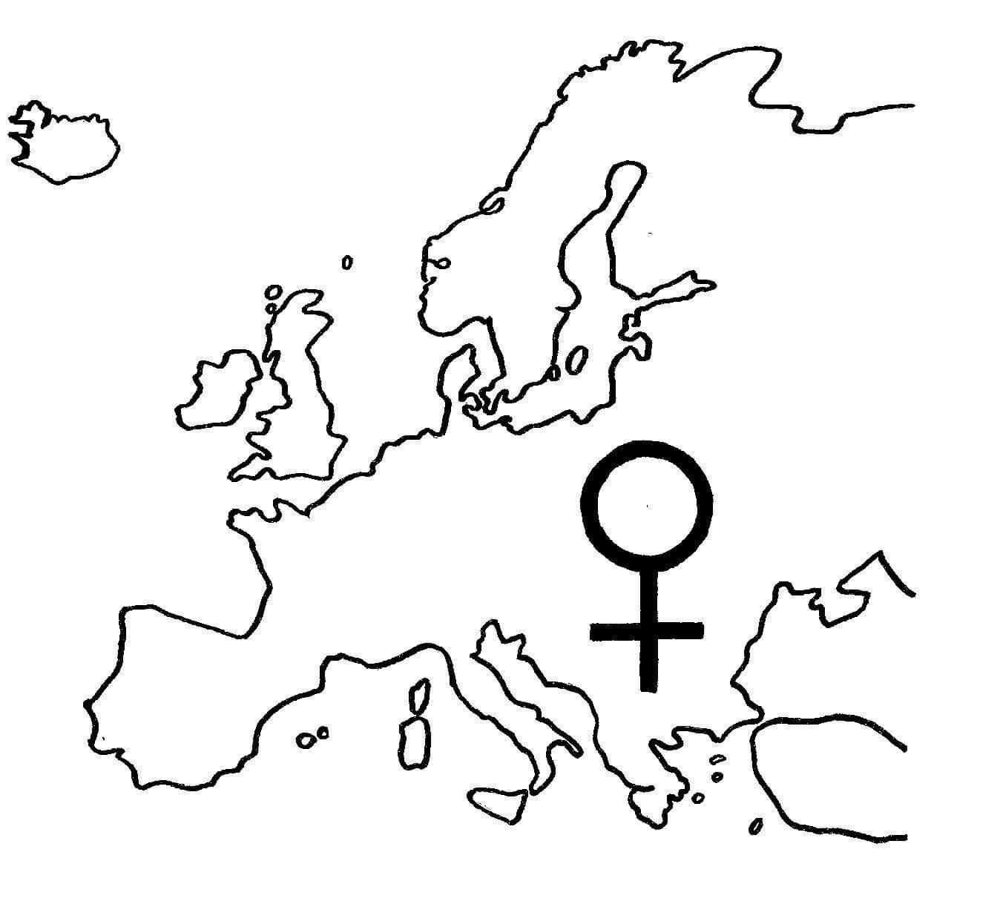

Leta 1993 je Evropska komisija podprla študijo o položaju žensk v znanosti v EU. Leta 1995 se je odločila prvič resneje obravnavati vprašanja enakosti obeh spolov v znanosti v 5. Okvirnem programu EU za raziskave in tehnološki razvoj (1999–2002).
Evropska komisija je leta 1999 ustanovila Helsinško skupino o ženskah in znanosti. Po zgledu te je bila leta 2001 v Sloveniji ustanovljena Komisija za uveljavitev vloge žensk v znanosti.
Podatki v letu 2010 glede na povprečje 27 držav eu: Delež podiplomskih študentk je 46 %, delež doktoric 44 %, delež raziskovalk z doktoratom 37 % in delež raziskovalk na najvišjih položajih 20 %.
